Version: 0.2
Date: 25 June 2026
Prepared for: Internal proposal and delivery planning
Prepared by: 1Cati / Product and Engineering
Primary market: Turkey
Primary deployment scope: Web application and installable PWA, not native mobile app at launch
| Item | Detail |
| Document type | Business Requirements Document |
| Primary audience | Executive sponsors, product leadership, delivery leads |
| Status | Consulting-ready v0.2 |
| Design refresh | 25 June 2026 |
| Confidentiality | STRICTLY CONFIDENTIAL |
The client is not asking for a simple website, landing page, or basic dashboard. The client is asking for a full residential site management operating system for a complex of 769 flats. The system must manage owners, tenants, staff, accounting, services, tickets, bookings, deposits, payments, access restrictions, communications, reporting, and audit history.
The best market response is to position the solution as a premium web-based CRM and operations platform for Turkish residential complexes. The proposed product should match the client's requested scope and improve it with AI-assisted management, stronger reporting, modern UX, and structured service workflows.
This BRD converts the client's short specification into a business-level requirement document. It defines the business goals, users, market expectations, Turkish service psychology, scope decisions, 15 delivery phases, functionality per phase, business rules, workflows, acceptance criteria, success metrics, and open questions.
The native mobile app requirement is removed from the first delivery scope. Instead, the recommended launch product is a responsive web application with PWA capability. This gives residents, owners, managers, accountants, and staff a mobile-friendly app-like experience through the browser, while reducing cost, time, app store dependency, and release complexity. Native iOS and Android apps can remain a later optional phase only if the client specifically demands store distribution.
The client mentioned a mobile app for iOS and Android. The required features were login, balance, payment, service request, chat, notifications, documents, and transaction history.
The launch scope should be:
A web app/PWA is more suited for the first delivery because:
We will not ignore mobile usage. We will deliver mobile-friendly PWA workflows. The removed item is only native mobile store app delivery at launch.
1. Create a single source of truth for the 769-flat residential site.
2. Replace manual tracking with structured digital workflows.
3. Give managers real-time visibility into debt, income, tasks, bookings, complaints, and risks.
4. Give accounting staff a reliable ledger-based finance system.
5. Give residents, owners, and tenants self-service access to payments, documents, service requests, and communication.
6. Give staff a clear task/ticket workflow with SLA and completion evidence.
7. Reduce late payments through reminders, debt visibility, and restriction rules.
8. Reduce operational delays by turning services into trackable tickets.
9. Improve trust through audit logs, statements, transparent balances, and documented actions.
10. Use AI to reduce manager workload without allowing AI to perform risky financial or access actions automatically.
The product should be considered successful when:
Market research was performed using publicly available product and documentation pages from leading local and global property, site, and service management products.
Primary reference categories:
Primary sources reviewed:
Research date: 24 June 2026. If a strictly historical June 2024 research baseline is required, a separate archive-based research task should be performed.
The Turkish residential site management market is already mature. A basic offer is not enough. A local competitor such as Apsiyon positions itself as an end-to-end digital assistant for collective living spaces. Its public messaging includes manager solutions, resident solutions, dues tracking, online bank integrations, card collection, reservations, manager mobile, resident mobile, access control systems, meter reading/billing, email/SMS, AI assistants, training, and support.
Important market signals from the Turkish baseline:
The Turkish market also values trust, human support, clear records, and visible control. For a residential complex, the system must not feel experimental. It must feel official, reliable, and easy to understand.
The following five Turkish players or adjacent market benchmarks should be tracked when positioning and designing the product. They are not presented as a legally ranked market-share list; they are the most relevant publicly verifiable benchmarks for the client requirement.
Apsiyon is the strongest local software benchmark for apartment/site management. It publicly promotes a broad suite of products and solutions including aidat tracking, online bank integrations, card collection, reservation, free website, manager mobile, e-mail/SMS, access control, meter reading and billing, AVM management software and AI assistants.
What this means for our product:
Senyonet positions itself for sites, apartments, facilities, hotels, offices, AVMs and management companies. Its public modules include public relations/communication, finance, accounting and security. It highlights requests, announcements, events, reservations, document management, bank/cash/current account visibility, collections, invoicing, budgeting, reporting, visitor/personnel/cargo/vehicle tracking, and support/training.
What this means for our product:
Yönetimcell positions itself as a simple and understandable site/apartment management program. Public features include aidat tracking, online bank integration, credit card/Masterpass collection, resident account/payment access, reports/Excel exports, multi-site management, manager mobile app, resident aidat tracking app and staff job-tracking app.
What this means for our product:
Aidatım combines software with service support. It publicly promotes a private assistant, management software, accounting support, legal support, transition/setup help, credit card collection, bank account tracking with smart matching, leave and payroll, monthly/yearly reports, current account tracking, expense sharing, meter reading/billing, e-mail/SMS and account sharing.
What this means for our product:
Siteplus is an adjacent integrated facility management benchmark rather than a pure software competitor. It publicly highlights integrated facility management, professional site management, private security, cleaning, alarm monitoring, landscaping, pest control, disinfection and technical maintenance/repair services.
What this means for our product:
| Capability | Apsiyon | Senyonet | Yönetimcell | Aidatım | Siteplus | Requirement For Our Product |
| Aidat/dues tracking | Yes | Yes | Yes | Yes | Service context | Must have |
| Online card/bank collection | Yes | Yes | Yes | Yes | Not primary | Must have/provider adapter |
| Resident portal/app | Yes | Implied portal | Yes | Yes | Not primary | PWA must cover |
| Manager mobile/access | Yes | Implied cloud/mobile | Yes | Implied | Operations staff | PWA manager/staff views |
| Finance/accounting | Yes | Yes | Yes/reports | Yes | Not primary | Ledger and reports |
| Reservations/bookings | Yes | Yes | Not main public focus | Not main public focus | Service scheduling | Must have |
| Communication/announcements | Yes | Yes | Yes | E-mail/SMS | Operational contact | Must have |
| Document management | Noted in ecosystem | Yes | Limited public detail | Account sharing/docs | Policies/certifications | Must have |
| Security/access/visitor | Yes/access products | Yes/security module | Security login/visitor | Not primary | Strong service area | Must plan integration |
| Work/task tracking | Noted through services | Operations modules | Yes/job tracking | Staff/payroll support | Strong service area | Must build ticketing |
| Meter/billing | Yes | Noted indirectly | Not central public focus | Yes | Not primary | Roadmap integration |
| AI | Strong public positioning | Not primary public focus | Not primary public focus | Assistant/service support | Not software AI | Our differentiator |
| Training/support | Yes | Strong | Support videos/free trial | Private assistant | Academy/training | Must include |
Global property management platforms such as Buildium, Yardi Breeze, and DoorLoop show the broader market standard.
Common global features:
The global benchmark confirms that the client request is realistic, but large. It is closer to a property operations platform than a small CRM.
The client's "service management" requirement should not be built as a simple form. It should be a service desk/ticketing module.
Atlassian Jira Service Management and general ITSM practices show the standard pattern:
For this project, the service module should work like a site operations ticketing system. Every cleaning request, transfer request, repair request, tour/activity request, complaint, and inspection should become a ticket with clear ownership and status.
Modern PWAs allow a single web app to deliver app-like behavior with one codebase. The PWA model supports installability, responsive layouts, caching, service workers, push capability where supported, and improved mobile usability.
For this project, PWA is the right first delivery route because:
This system will handle personal data, financial records, identity documents, access permissions, photos/videos, chats, and potentially camera/access events. Security cannot be treated as a late add-on.
Security baseline should include:
KVKK requires lawful, fair, purpose-limited, proportionate, accurate, and time-limited processing of personal data. This directly affects document storage, identity verification, camera events, access control, and AI data handling.
Turkish residential site users are not one single group. The platform must serve older residents, younger tenants, property owners, management staff, accountants, technical staff, and administrators.
The design should respect these patterns:
The product should use psychology ethically:
The service model should feel local, responsive, and accountable:
Controls system settings, roles, permissions, integrations, global rules, and audit access. Needs a secure, structured admin area.
Owns daily operations. Needs dashboard, tasks, debt list, communications, approvals, bookings, services, staff performance, and AI briefing.
Owns financial correctness. Needs ledger, accruals, payments, deposits, refunds, reconciliation, reports, exports, and audit trail.
Owns one or more flats. Needs balance, statements, payments, service requests, tenant/rental visibility, documents, reports, and communication.
Lives in or uses a flat. Needs permitted access to balance, payment, service requests, chat, documents, booking status, and notifications.
Completes assigned work. Needs task list, SLA, location/flat info, notes, photo/video upload, completion status, and manager feedback.
Handles access-related tasks and entry issues. Needs access status, restricted flats, visitor/access events if integrated, and task/tour control.
Helps migrate data, train users, resolve issues, and maintain integrations. Needs admin-safe support tools and audit-safe troubleshooting.
| Surface | Users | Business Purpose |
| Web Admin App | Admin, manager, accounting | Main operational control center |
| Manager PWA | Manager | Mobile view for urgent tasks, approvals, debts and messages |
| Owner Portal/PWA | Owner | Balance, payments, documents, reports, services |
| Tenant Portal/PWA | Tenant | Payment, service request, chat, notifications |
| Staff PWA | Staff, technician, cleaning, security | Task execution and media reports |
| Accounting Console | Accountant | Ledger, payments, deposits, reconciliation, exports |
| Service Desk Console | Manager, staff lead | Ticket lifecycle and SLA management |
| Booking Console | Manager, booking team | Availability, move-in, checkout, deposit |
| Communication Center | Manager, residents, staff | Chat, announcements, email/SMS/push |
| Reporting Center | Manager, accounting, admin | Financial, operational and KPI reports |
| AI Command Center | Manager, accounting, admin | AI briefing, recommendations, risk detection |
| Integration Console | Admin, support | Bank, payment, access, identity, meter, camera integrations |
Convert the client's short specification into a complete, signed business scope that can be estimated, designed, built, tested, and delivered.
Competitors do not sell only features. They sell confidence: support, migration, training, reporting, integrations, and proof that the platform can handle real operational complexity. The discovery phase must therefore produce more than a requirements list. It must produce a business operating model.
Create a premium but practical interface that Turkish management teams, accountants, staff, owners, and tenants can use without heavy training.
Leading platforms emphasize ease of use, simple daily workflows, mobile access, and guided onboarding. This is especially important for non-technical property teams.
Create the secure foundation for all future modules.
Property platforms handle sensitive personal, financial, and access data. Trust depends on proper access control, auditability, and data separation.
Build the 769-flat operational map of the property.
Competitors often emphasize quick setup and migration. DoorLoop specifically markets data migration from Excel or other systems. For this project, import quality is crucial because the site likely has existing spreadsheets.
Represent every person connected to the site and connect them to the correct flats, roles, documents and permissions.
Owner portals, resident centers, tenant management, and staff workflows are standard in global products. The local Turkish context also needs strong identity/contact accuracy because payment, access and notifications depend on it.
Create a reliable finance engine for aidat, utilities, services, rent, deposits, refunds and management accounting.
Accounting and payment automation are core expectations in Buildium, Yardi Breeze, DoorLoop, and Apsiyon-like products. The finance module must be ledger-based, not a simple balance field.
Implement payment collection, deposit lifecycle, automatic offsetting and debt-based restrictions.
Online bank integrations, card collection, ACH/card payments and payment automation are market standards. Debt restriction is especially important in the client's requirement.
Create a structured service catalogue and order process that turns resident requests into accountable operational work.
Maintenance requests are standard in global property platforms. Local systems also include service/reservation functionality. The client explicitly asks for cleaning, transfer, repairs and tours.
Give staff and managers a complete ticket/task system for site operations.
Yardi Breeze highlights electronic maintenance requests, smartphone photo/video capture, invoices/POs, and progress notes. Atlassian highlights request management, incident management, problem management, asset management, knowledge management, AI and APIs. This confirms that the service module should be a true ticketing/work management module.
Manage booking, payment, deposit, access, move-in preparation and checkout settlement from one workflow.
Reservation and leasing flows are standard in local and global products. The client's requirement combines booking, deposit, access and task creation, so the workflow must be end-to-end.
Centralize communication and records so residents, owners, staff and managers do not rely on scattered calls or personal messages.
Email/text communication, portals, file storage, chat support, owner/resident centers and notifications are market-standard features. In Turkey, SMS and direct communication remain especially important.
Deliver mobile usability through responsive web/PWA without building native apps at launch.
Native mobile apps are common in the market, but PWA is the faster and more cost-effective launch path. The business requirement is mobile access, not necessarily native code. PWA satisfies the practical user need for app-like access from phone.
Connect the CRM with real operational systems: payments, banks, identity, access, cameras, meters, SMS, email and push.
Integration capability is a market differentiator. Apsiyon highlights bank integrations, card collection, access control and meter/billing. Buildium highlights open API. DoorLoop and Yardi emphasize payments, accounting and operations.
Use AI to reduce workload, increase decision quality, improve response time and differentiate the proposal from standard competitors.
Apsiyon markets AI assistants and AI use cases such as request categorization, billing error prediction, voice/NLP, predictive reporting, meter analytics, preventive maintenance and anomaly detection. DoorLoop markets an AI assistant for tenant requests, daily tasks, insights and reports. AI is now a competitive expectation in premium products.
Launch the product safely with tested workflows, trained users, support process, monitoring and rollback planning.
Competitors emphasize onboarding, support, training and migration. For non-technical users, implementation quality is as important as software quality.
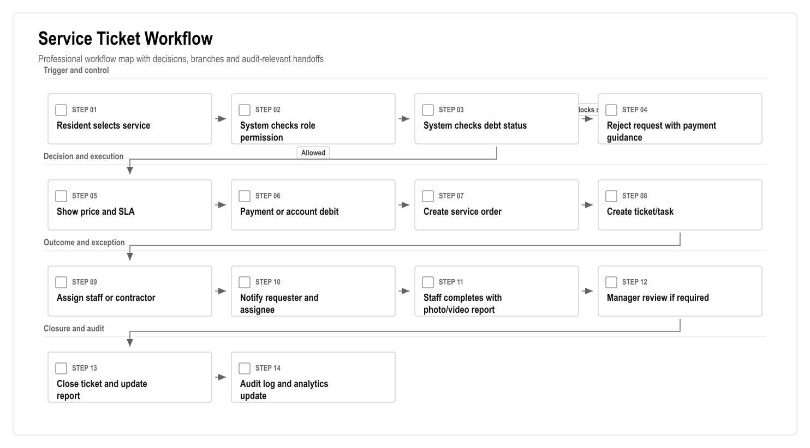
Figure: Service Ticket Workflow. Generated from the workflow source in this document.
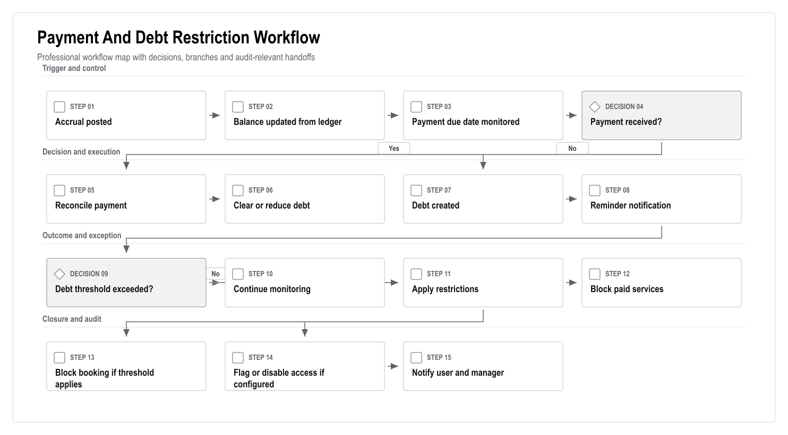
Figure: Payment And Debt Restriction Workflow. Generated from the workflow source in this document.
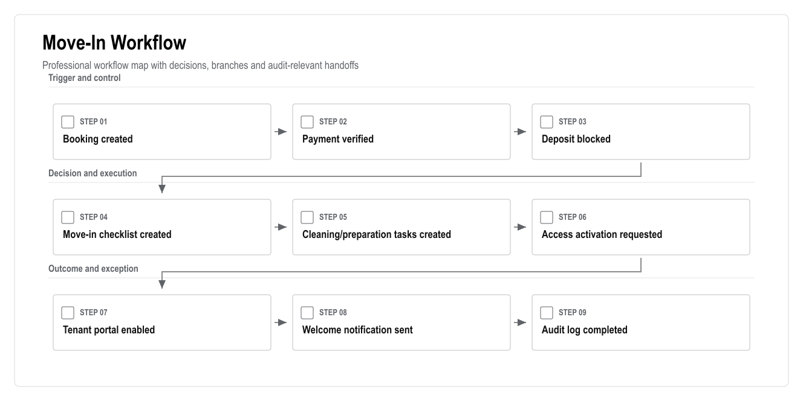
Figure: Move-In Workflow. Generated from the workflow source in this document.
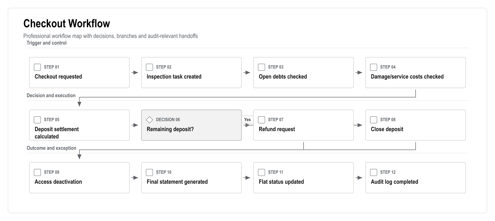
Figure: Checkout Workflow. Generated from the workflow source in this document.
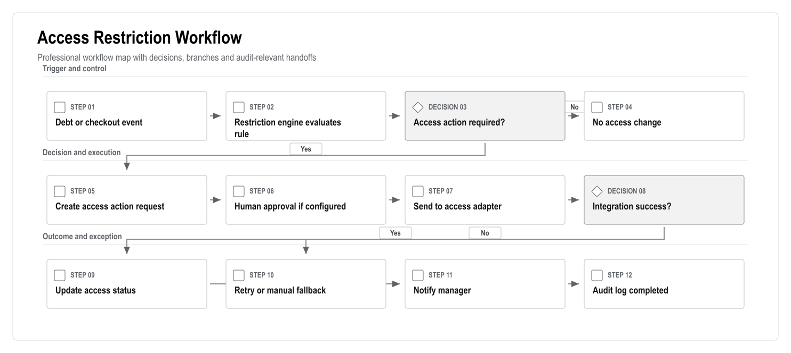
Figure: Access Restriction Workflow. Generated from the workflow source in this document.
The following edge cases must be considered during product design, technical design, UAT and production launch.
1. What is the exact block/floor/flat structure for all 769 flats?
2. Is the property used for long-term tenancy, short-term letting, holiday rentals, or mixed use?
3. What are the exact debt thresholds for service, booking and access restrictions?
4. Which bank or payment provider must be used?
5. Is card payment required at launch or can manual/bank transfer posting be first?
6. Which access card/barrier system is currently installed?
7. Are camera systems required at launch or only later?
8. Is meter reading/billing required at launch?
9. What documents must be stored for owners, tenants and staff?
10. What data currently exists in Excel or another system?
11. Which languages are required at launch?
12. Who will approve refunds and access restrictions?
13. What legal wording is required for debt/access restrictions?
14. What is the expected support model after launch?
15. Is native mobile app officially removed from launch scope and accepted as PWA-first?
16. Which Turkish competitor does the client already know or currently use?
17. Are they expecting Apsiyon-like AI/access/meter features at launch or roadmap level?
18. Are professional facility services such as cleaning/security/maintenance provided internally or by an external company?
19. Are emergency services allowed to bypass debt restrictions?
20. What are the legal boundaries for access blocking due to debt?
For the first client-facing demonstration, build a realistic clickable web/PWA demo with:
This proves vision fast while the production system is built properly.
Production should be built in controlled phases:
1. Foundation and data.
2. Users and permissions.
3. Finance ledger.
4. Payments/deposits/restrictions.
5. Services/tickets/tasks.
6. Booking/move-in/checkout.
7. Communication/documents.
8. PWA.
9. Integrations.
10. AI.
11. QA/security/launch.
The offer should be positioned as:
"A premium AI-powered residential site operating system for Turkish complexes, combining finance, services, bookings, access, communication, reporting and AI management in one secure web platform."
Version: 0.2
Date: 25 June 2026
Prepared for: Product, design, engineering, QA and delivery teams
Related documents:
| Item | Detail |
| Document type | Product Requirements Document |
| Primary audience | Product, design, engineering, QA and delivery teams |
| Status | Consulting-ready v0.2 |
| Design refresh | 25 June 2026 |
| Confidentiality | STRICTLY CONFIDENTIAL |
The client needs to manage a 769-flat residential complex with owners, tenants, staff, accounting, payments, services, bookings, deposits, debt restrictions, access rules, communication, reporting and audit history. The current implemented concept is a useful foundation, but the required product is a full site management operating platform.
Build a Turkish-first AI-powered residential site management CRM as a responsive web application and installable PWA. The product will cover the client's mandatory requirements and add premium capabilities such as AI manager briefing, AI service triage, debt-risk insights, anomaly detection, workflow automation, modern dashboards and auditable operations.
The product must compete against or at least be credible beside the following Turkish market benchmarks:
1. Apsiyon: broad site/apartment management suite with aidat, bank integration, card collection, reservation, access control, meter/billing, e-mail/SMS, mobile and AI positioning.
2. Senyonet: site/facility management platform with public relations, finance, accounting, security, requests, announcements, events, reservations, document management, support and training.
3. Yönetimcell: simple site/apartment program with aidat tracking, bank integration, credit card/Masterpass collection, resident payments, reports, Excel export, manager/resident apps and staff job tracking.
4. Aidatım: hybrid software/service model with private assistant, accounting/legal support, setup/migration, smart bank matching, reports, meter reading, e-mail/SMS and account sharing.
5. Siteplus: adjacent integrated-facility-management benchmark with professional site management, security, cleaning, alarm monitoring, landscaping and technical maintenance/repair.
The product should be positioned as:
> A premium AI-powered residential site operating system for Turkish complexes, combining finance, services, bookings, access, communication, reporting and management intelligence in one secure web platform.
The strongest differentiators are:
As an administrator, I need full configuration access so that the system can be safely operated, secured and maintained.
As a site manager, I need one dashboard for debts, tasks, bookings, access issues, resident communication and AI recommendations so that I can control daily operations.
As an accountant, I need accurate ledgers, accruals, payments, deposits, refunds, reconciliation and reports so that financial records are correct and auditable.
As an owner, I need to see my balance, payments, statements, tenant/rental information, documents and service requests so that I can manage my flat transparently.
As a tenant, I need to pay allowed balances, request services, receive notifications, chat with management and access permitted documents so that I can handle daily needs without calling management.
As staff, I need assigned tasks, SLA, location details, notes, photo/video upload and completion controls so that I can complete work correctly from my phone.
User stories:
Acceptance criteria:
User stories:
Acceptance criteria:
User stories:
Acceptance criteria:
User stories:
Acceptance criteria:
User stories:
Acceptance criteria:
User stories:
Acceptance criteria:
User stories:
Acceptance criteria:
User stories:
Acceptance criteria:
User stories:
Acceptance criteria:
User stories:
Acceptance criteria:
AI must be evaluated against:
The product must handle:
Architecture:
Security:
Testing:
The product should be understood as four connected experiences, not one generic CRM screen. Each experience has a different job and therefore a different product standard.
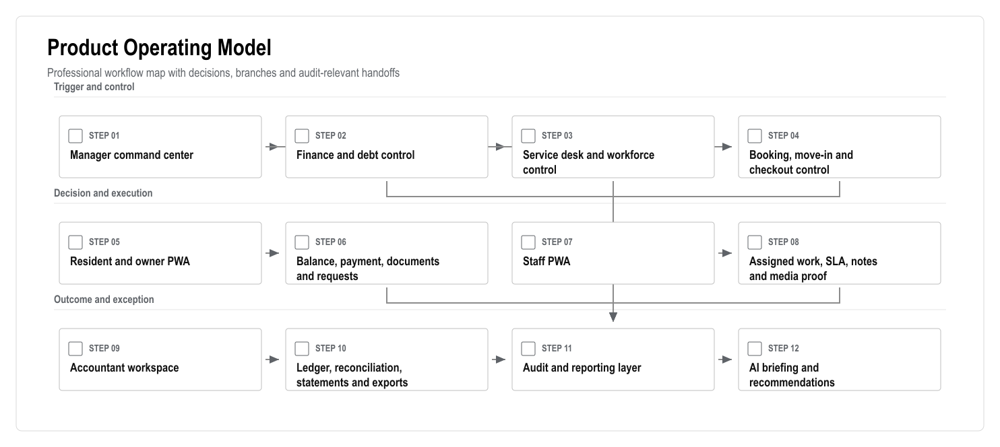
Figure: Product Operating Model. Generated from the workflow source in this document.
Product implication:
The main product risk is treating modules as separate pages. The platform only works if finance, restrictions, tickets, bookings, access and communications share one operational state.
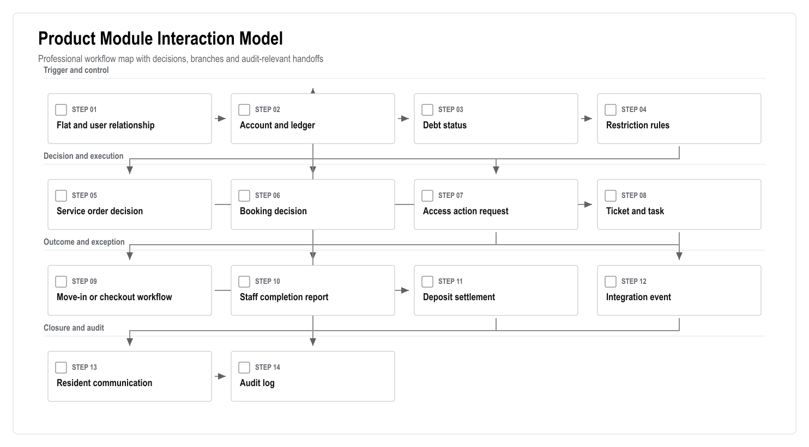
Figure: Product Module Interaction Model. Generated from the workflow source in this document.
Design rule:
| Area | Primary Screens | Must Support | Product Quality Bar |
| Manager command center | Dashboard, debt list, task board, booking calendar, approvals, AI briefing | Exception review, assignment, approval, communication | Clear priorities and no hidden operational risk |
| Resident/owner PWA | Home, balance, payment, service request, booking status, documents, chat | Fast mobile completion and simple language | Fewer steps, clear receipts, respectful debt messaging |
| Staff PWA | Task list, task detail, route/checkpoint, media upload, completion form | Mobile execution, SLA visibility, offline draft where feasible | No administrative clutter during field work |
| Accountant workspace | Ledger, accruals, payments, deposits, reconciliation, reports, exports | Accuracy, reversals, audit trail, statement generation | Finance actions are traceable and hard to misuse |
| Admin workspace | Roles, permissions, site setup, integrations, rules, audit logs | Safe configuration and controlled overrides | Dangerous settings are explicit and logged |
| AI command center | Briefing, recommendations, approval queue, evaluation results | Source-linked recommendations and human approval | AI is useful but never silently authoritative |
| Capability | MVP Acceptance Standard | Evidence Required |
| 769-flat model | Blocks, floors, flats, status and relationships load correctly | Seed/import result and flat matrix review |
| Role model | Admin, manager, accountant, owner, tenant and staff permissions work | Role-based navigation and blocked access tests |
| Ledger basics | Balances are derived from ledger lines, not editable totals | Unit tests and accountant review scenario |
| Service desk | Accepted service request always creates a ticket/task | E2E test and audit log record |
| Staff mobile flow | Staff can open, update and complete a task with media | Mobile viewport Playwright test |
| Resident PWA flow | Resident can view balance, submit request and see status | Mobile viewport Playwright test |
| Dashboard | Manager sees debt, tickets, bookings and risk priorities | Dashboard source-data drill-down |
| AI guardrails | AI cannot execute payment, refund, ledger or access changes | AI safety test cases |
| Audit log | Critical writes create actor, timestamp and entity history | Audit log inspection |
Version: 0.2
Date: 25 June 2026
Prepared for: Internal architecture, estimation and delivery planning
Prepared by: 1Cati / Product and Engineering
Related BRD: docs/requirements/option-3-ai-site-crm/BRD.md
Primary delivery model: Web application and installable PWA
Native mobile scope: Excluded from launch scope unless later approved
| Item | Detail |
| Document type | Technical Requirements Document |
| Primary audience | Architecture, engineering, QA, security and implementation teams |
| Status | Consulting-ready v0.2 |
| Design refresh | 25 June 2026 |
| Confidentiality | STRICTLY CONFIDENTIAL |
This TRD defines the technical requirements for building a full residential site management CRM for a 769-flat complex. The system must support site/flat data, users, owners, tenants, staff, finance, payments, deposits, restrictions, services, tickets, bookings, communication, documents, reports, integrations, AI assistance, security, audit logs and PWA access.
The recommended architecture is a modular monolith-first platform using the existing Next.js and Supabase foundation. A modular monolith is the right first production architecture because the product has heavy domain coupling: finance affects service orders, service orders create tasks, bookings create deposits and access actions, and access restrictions depend on debt. Premature microservices would increase delivery risk. The architecture should still be API-first and module-separated so services can be extracted later if scale or team structure demands it.
The launch system should use:
The current web app already includes:
Current package commands:
The existing stack is a good foundation for the web/PWA product. The missing parts are the real domain database schema, server-side business logic, finance engine, APIs, workflow orchestration, integrations, AI safety layer, and complete test coverage.
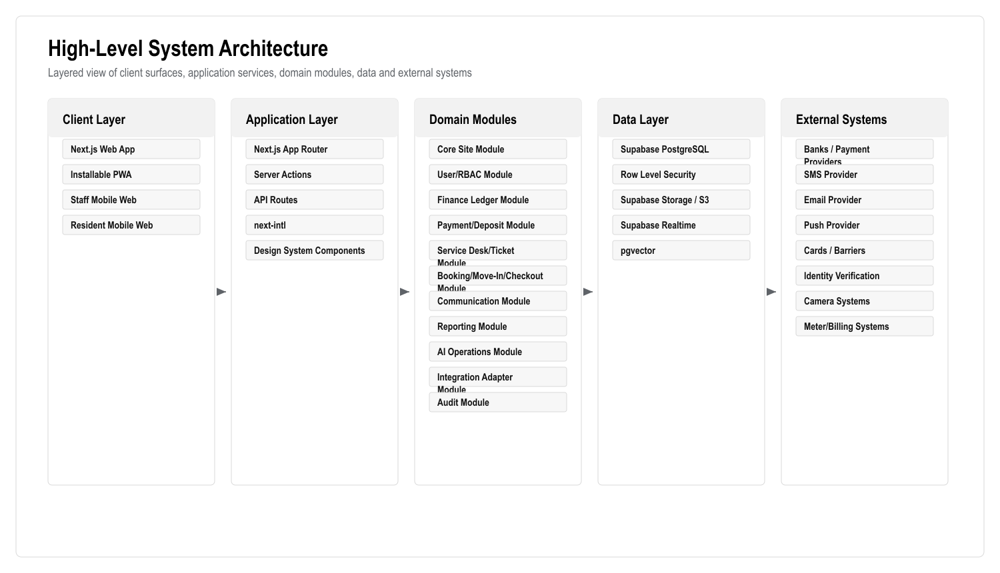
Figure: High-Level System Architecture. Generated from the workflow source in this document.
| Layer | Recommended Technology | Reason |
| Frontend | Next.js 16 App Router | Already used; supports SSR, routing, API/server actions and PWA-friendly delivery |
| UI | React 19, Tailwind CSS v4, shadcn/base UI, lucide-react | Existing stack; accessible components and consistent design system |
| Language | TypeScript | Type safety for business-critical finance and permissions logic |
| Auth | Supabase Auth | Existing stack and integrates with Supabase database/RLS |
| Database | Supabase PostgreSQL | Strong ACID transactions, relational model, ledger integrity, reporting |
| Authorization | PostgreSQL RLS + app-level RBAC | Defense in depth for owner/tenant/staff data isolation |
| Files | Supabase Storage or S3-compatible storage | Documents, identity files, task photos/videos, reports |
| Realtime | Supabase Realtime | Chat, task status, notification counters, live dashboards |
| Search | PostgreSQL full-text search | Search flats, users, tickets, transactions and documents metadata |
| AI retrieval | pgvector | Retrieve policies, tickets, ledger explanations and knowledge snippets |
| AI orchestration | Next.js server module first; optional FastAPI/LangGraph worker later | Start simple; separate when workflows become heavy |
| Background jobs | Supabase Edge Functions/cron initially; queue service later if needed | Payment reconciliation, reminders, report generation, retries |
| Charts | Recharts or equivalent React charting library | Dashboard and reporting visuals |
| Testing | Playwright, Vitest/React Testing Library if added | E2E and unit coverage |
| Monitoring | Sentry, Vercel logs/analytics, OpenTelemetry where practical | Error tracking and operational visibility |
| Security baseline | OWASP ASVS, KVKK-aware controls | Security and privacy expectations |
The Turkish market benchmark changes the technical scope in practical ways. Apsiyon, Senyonet, Yönetimcell, Aidatım and Siteplus show that the platform must not only display CRM data. It must support finance, resident self-service, reporting, communication, payment collection, work tracking, access/security workflows, support/training and integration readiness.
| Turkish Player | Technical Capabilities To Account For | Required Technical Response |
| Apsiyon | Aidat tracking, online bank integrations, card collection, reservations, manager mobile, e-mail/SMS, access control, meter/billing, AI positioning | Keep payments, access, reservations, meter/billing and AI in core architecture/roadmap |
| Senyonet | Communication/public relations, finance, accounting, security, reservations, document management, support/training | Build connected modules, not disconnected pages; include documents, security events and training/support outputs |
| Yönetimcell | Aidat tracking, bank integration, credit card/Masterpass, resident payment view, reporting/Excel export, manager/resident/staff mobile apps, job tracking | PWA must cover mobile use cases; export and staff task tracking are required |
| Aidatım | Private assistant, management software, accounting/legal support, migration/setup, smart bank matching, payroll/leave, reporting, meter reading, e-mail/SMS | Add reconciliation queue, migration tooling, support workflows and future payroll/meter extensibility |
| Siteplus | Integrated facility management, professional site management, security, cleaning, alarm monitoring, landscaping, technical maintenance/repair | Service desk must support real field operations, contractor/staff queues, SLA, media evidence and incident tracking |
Technical design consequences:
Technical responsibilities:
Technical responsibilities:
Technical responsibilities:
Technical responsibilities:
Responsibilities:
Key entities:
Responsibilities:
Key entities:
Responsibilities:
Key entities:
Responsibilities:
Key entities:
Responsibilities:
Key entities:
Responsibilities:
Key entities:
Responsibilities:
Key entities:
Responsibilities:
Key entities:
Responsibilities:
Key entities:
Responsibilities:
Key entities:
Responsibilities:
Key entities:
Responsibilities:
Key entities:
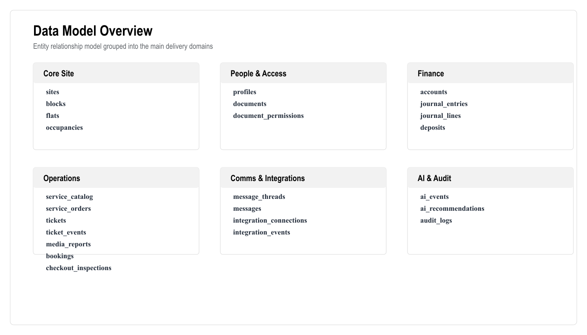
Figure: Data Model Overview. Generated from the workflow source in this document.
Required indexes include:
Use Next.js server actions for tightly coupled app mutations and API routes for external/integration-facing endpoints. Keep business logic in domain services, not directly inside UI components.
All write APIs must include:
Core site:
Users:
Finance:
Payments and deposits:
Services and tickets:
Bookings:
Communication:
AI:
Integrations:
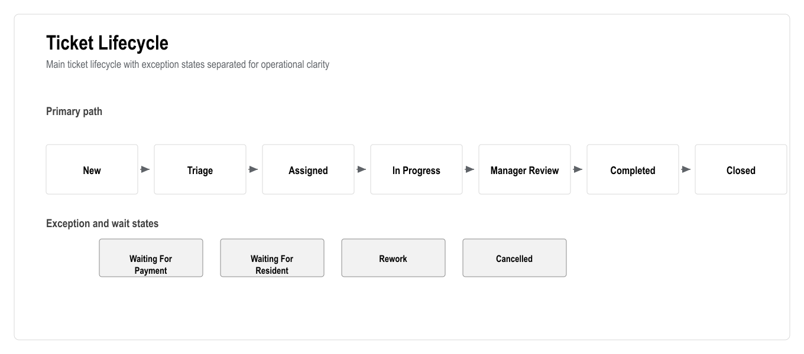
Figure: Ticket Lifecycle. Generated from the workflow source in this document.
Required fields:
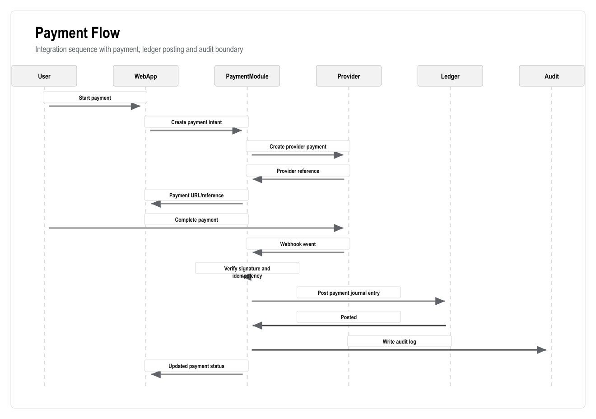
Figure: Payment Flow. Generated from the workflow source in this document.
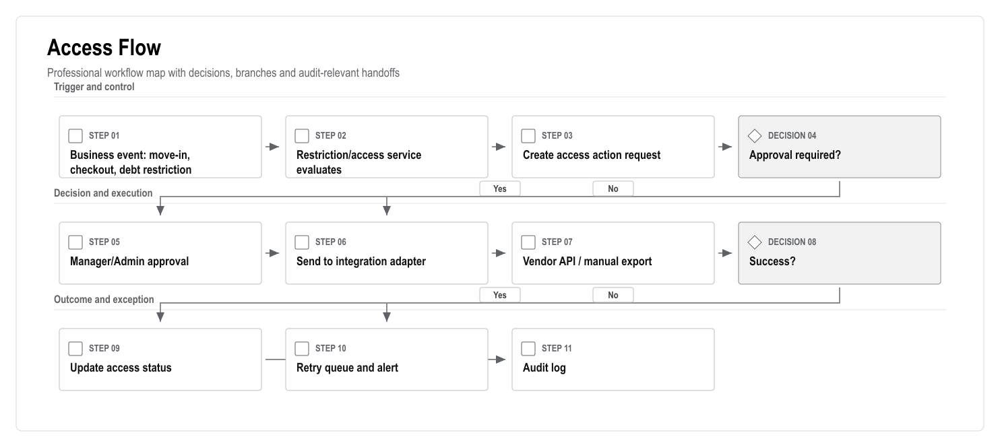
Figure: Access Flow. Generated from the workflow source in this document.
Camera integration should not be first-core unless required by client. Recommended first version:
AI may read only authorized data:
AI must not read:
Manager:
Accountant:
Resident:
Staff:
Evaluation cases should include:
Minimum acceptance should be defined per use case before production release.
Audit required for:
The system should align with OWASP ASVS categories including:
Dashboard metrics should come from database views or service-level aggregation, not hardcoded frontend calculations.
Required metrics:
Reports should support:
Initial version:
Later version:
The PWA must support:
Each integration must implement a common adapter contract:
All integrations must support:
Priority 1:
Priority 2:
Priority 3:
Technical deliverables:
Engineering outputs:
Definition of done:
Technical deliverables:
Engineering outputs:
Definition of done:
Technical deliverables:
Engineering outputs:
Definition of done:
Technical deliverables:
Engineering outputs:
Definition of done:
Technical deliverables:
Engineering outputs:
Definition of done:
Technical deliverables:
Engineering outputs:
Definition of done:
Technical deliverables:
Engineering outputs:
Definition of done:
Technical deliverables:
Engineering outputs:
Definition of done:
Technical deliverables:
Engineering outputs:
Definition of done:
Technical deliverables:
Engineering outputs:
Definition of done:
Technical deliverables:
Engineering outputs:
Definition of done:
Technical deliverables:
Engineering outputs:
Definition of done:
Technical deliverables:
Engineering outputs:
Definition of done:
Technical deliverables:
Engineering outputs:
Definition of done:
Technical deliverables:
Engineering outputs:
Definition of done:
Required for:
Required for:
Required scenarios:
Business UAT must include:
Each environment must have:
Pipeline should run:
Use structured logs with:
Track:
Alerts required for:
Likely sources:
1. Collect source files.
2. Map columns.
3. Validate data.
4. Preview import.
5. Resolve errors.
6. Commit import.
7. Run reconciliation reports.
8. Get client sign-off.
The following are excluded from first launch unless separately approved:
1. Which payment provider or bank must be integrated first?
2. Is card payment required at launch?
3. Which access control vendor is installed?
4. Does access vendor provide API, file import, or manual admin panel only?
5. Are cameras required at launch?
6. Is meter reading/billing required at launch?
7. Is identity verification external provider required or manual document review enough?
8. What is the required retention period for documents, audit logs and media?
9. What languages are required for launch?
10. Does the client require hosting in Turkey or EU?
11. Is Supabase acceptable for production hosting and data residency?
12. What are expected concurrent users?
13. Are there legal constraints around access blocking due to debt?
14. Who approves refunds and access changes?
15. Which reports are legally/operationally mandatory?
16. Which Turkish competitor is the client comparing us against?
17. Does the client require Apsiyon-like access/meter/AI capability at launch or in roadmap?
18. Which professional facility management services are in-house vs outsourced?
19. Should emergency maintenance bypass debt restriction with manager approval?
20. Does the client need payroll/leave features later, as seen in some Turkish market offerings?
The platform should apply sensitive controls in layers. UI visibility is useful, but it is not a security boundary. Server-side authorization, database policies, idempotency, audit logs and approval queues must carry the actual control responsibility.
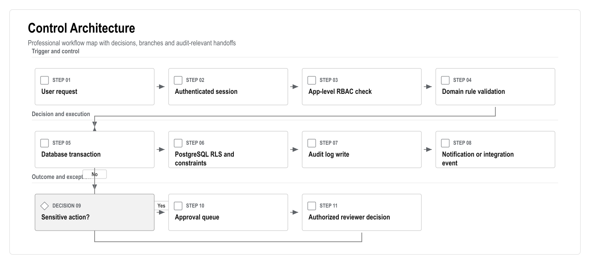
Figure: Control Architecture. Generated from the workflow source in this document.
Required rule:
Every external integration must behave like an auditable state machine. This is especially important for payments, banks, access cards/barriers, SMS/email, identity verification and meter systems.
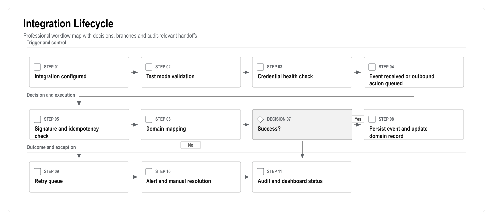
Figure: Integration Lifecycle. Generated from the workflow source in this document.
Required rule:
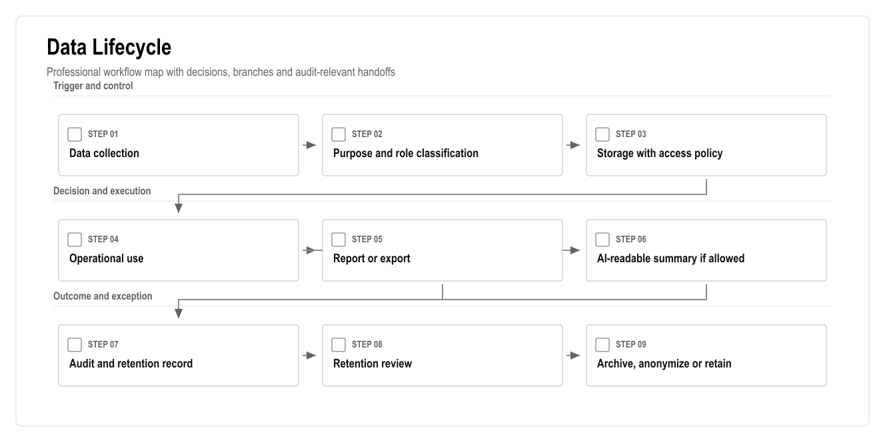
Figure: Data Lifecycle. Generated from the workflow source in this document.
Data design rules:
| Gate | Required Evidence | Exit Standard |
| Architecture gate | Domain model, data model, sequence flows, risk register | Critical flows are technically coherent |
| Security gate | RBAC/RLS checks, ASVS checklist, secret handling, audit events | No critical/high unresolved issue |
| Finance gate | Ledger tests, reversal tests, idempotency tests, accountant review | Balances reconcile and postings are immutable |
| Integration gate | Test mode, webhook verification, retry queue, manual fallback | No silent failure path |
| AI gate | Prompt logs, source links, role tests, restricted-action refusals | AI cannot mutate sensitive records directly |
| Launch gate | UAT evidence, backup/restore drill, monitoring, support runbook | Business owner accepts go-live readiness |
Version: 0.2
Date: 25 June 2026
Purpose: Phase-by-phase market research and best-practice comparison for the 15-phase delivery plan.
| Item | Detail |
| Document type | Market Research Annex |
| Primary audience | Strategy, sales, product and delivery leadership |
| Status | Consulting-ready v0.2 |
| Design refresh | 25 June 2026 |
| Confidentiality | STRICTLY CONFIDENTIAL |
The client request should be treated as a full residential operations platform, not a simple CRM. Market research shows that serious competitors already provide property accounting, payments, resident/owner portals, service requests, maintenance workflows, mobile access, communication, reporting, integrations, onboarding and increasingly AI assistance.
The correct business response is to match the client's mandatory scope and add AI, workflow clarity, premium web/PWA UX, stronger reporting, and Turkish-localized service delivery.
| Source | Relevant Findings |
| Apsiyon | Turkish baseline for aidat tracking, bank integrations, card collection, reservation, manager/resident mobile, access control, meter/billing, email/SMS and AI assistant positioning |
| Senyonet | Turkish site/facility software benchmark for communication/public relations, finance, accounting, security, reservations, document management, support and training |
| Yönetimcell | Turkish usability benchmark for aidat tracking, bank integration, credit card/Masterpass collection, resident payment access, reporting/Excel export and staff job tracking |
| Aidatım | Turkish hybrid benchmark combining management software, private assistant, accounting/legal support, migration/setup, bank matching, reports, meter billing and e-mail/SMS |
| Siteplus | Adjacent integrated facility management benchmark for professional site management, security, cleaning, technical maintenance and field operations |
| Buildium | Global property management baseline: accounting, payments, maintenance requests, resident center, owner portal, leasing, marketplace, open API, automation and AI |
| Yardi Breeze | Global baseline: online balances/payments, automated rent/fee posting, maintenance requests, smartphone photos/videos, accounting and owner reports |
| DoorLoop | Global baseline: accounting, bank sync, financial reports, leasing, CRM, maintenance, mobile app, owner portal, file storage, rent collection, tenant management, communication and AI |
| Atlassian Jira Service Management | Ticketing/service desk baseline: request intake, incident/request workflows, SLA, assignment, automation, reporting and AI |
| web.dev PWA | PWA baseline: installable mobile web experience, one codebase, service worker/caching capabilities and app-like web behavior |
| OWASP ASVS | Security baseline for authentication, access control, validation, logging, API security and data protection |
| KVKK | Turkish data protection baseline for personal data processing, purpose limitation, proportionate processing and protection obligations |
| Phase | What The Market Does | Best Practice For Our Product | AI / Time-Saving Add-On | Turkish Adaptation |
| 1. Discovery and benchmark | Competitors sell onboarding, migration and training, not only software | Start with operating model, finance rules, integration inventory and data migration plan | AI meeting summaries, gap analysis and scope checklist | Turkish examples, clear business language, visible implementation confidence |
| 2. UX/UI design system | Market leaders emphasize simple portals, dashboards and guided workflows | Role-based navigation, calm dashboard, clear statuses and mobile-first resident/staff flows | AI briefing cards and next-best-action prompts | Turkish-first wording, respectful tone, low clutter, visible support |
| 3. Platform foundation, auth, RBAC, audit | Mature platforms restrict owner/resident/staff access and preserve operational logs | Auth, RBAC, RLS, audit logs and secure admin settings from day one | AI audit summary and unusual action detection | Trust depends on "who did what and when" clarity |
| 4. Site/block/flat/import | Competitors support migration from Excel and structured property setup | 769-flat matrix, import preview, validation and data quality dashboard | AI duplicate/missing-data detection | Managers commonly rely on spreadsheets; import must be simple |
| 5. User/owner/tenant/staff management | Owner portals, resident centers and tenant management are standard | Profile, documents, relationships, identity status, staff groups | AI duplicate contacts and missing document alerts | Strong privacy and clear contact/SMS support |
| 6. Financial ledger | Accounting is a core market feature | Ledger-based balances, accruals, statements, reversals and exports | AI balance explanation and anomaly detection | Financial disputes require official, traceable records |
| 7. Payments/deposits/restrictions | Online bank/card collection and automated payments are standard | Payment provider, bank import, reconciliation, deposit lifecycle, debt rules | AI unmatched payment suggestions and debt-risk ranking | Debt language must be firm, clear and respectful |
| 8. Service catalogue/order flow | Maintenance and service requests are expected | Service catalogue, debt check, payment/debit, order, ticket, notification | AI category, urgency and SLA suggestions | Show price/SLA before confirmation; explain blocked requests |
| 9. Tasks/workforce/SLA/media | Global tools support maintenance photos/videos, notes and progress | Ticket board, staff PWA, SLA, media report, tour control | AI routing, duplicate ticket detection and workload balancing | Staff need simple mobile screens and managers need proof |
| 10. Booking/move-in/checkout | Reservation/leasing workflows are common | Availability, payment, deposit, move-in tasks, access, checkout settlement | AI booking conflict and checkout risk summaries | Deposits and access changes need clear documentation |
| 11. Communication/documents | Portals, email/SMS, files and chat are standard | Linked chat, announcements, delivery logs, document vault | AI reply drafts, summaries and announcement drafts | SMS/email still important; official communication should stay in system |
| 12. Web/PWA mobile experience | Mobile apps are common; PWA can satisfy mobile access faster | Responsive web app, installable PWA, mobile staff/resident workflows | Mobile AI help and voice-ready Turkish commands | Works for users who do not want app store installation |
| 13. Integrations | Market differentiators include payment, banks, access, meters and APIs | Adapter layer, webhooks, retries, integration health and manual fallback | AI integration failure summaries and anomaly alerts | Local vendors vary; fallback process must be planned |
| 14. AI and analytics | AI assistants are increasingly promoted by competitors | Manager/accountant/resident/staff AI, recommendations, approval workflow | Daily briefing, anomaly detection, predictive maintenance, report generation | Turkish quality and human approval are critical for trust |
| 15. QA/security/UAT/training/launch | Competitors sell support and implementation services | UAT scripts, security review, training, launch runbook, monitoring | AI test assistance and support triage | Hands-on launch support and role-specific training are essential |
The strongest competitive opportunities are:
1. Combine Turkish site management needs with a modern global SaaS UX.
2. Replace vague "service management" with a real service desk/ticketing system.
3. Build a true finance ledger, not a simple balance table.
4. Make debt restrictions configurable, auditable and transparent.
5. Use PWA to deliver mobile access faster than native development.
6. Add AI, but keep AI controlled with human approval.
7. Make the dashboard action-oriented, not only informational.
8. Treat support, migration and training as part of the product offer.
9. Make access integrations auditable and failure-aware.
10. Make Turkish copy, SMS/email, receipts and official-looking statements central to trust.
These five players are included because they are publicly visible and relevant to the client's requested scope. They should be treated as benchmarks, not as a legally ranked market-share list.
Observed capabilities:
Implications:
Observed capabilities:
Implications:
Observed capabilities:
Implications:
Observed capabilities:
Implications:
Observed capabilities:
Implications:
The expanded BRD/TRD now includes edge cases across:
The key product rule is that risky cases must be handled by state machines, audit logs and approval workflows, not by informal manual edits.
This annex uses public competitor and best-practice information available on 24 June 2026. It is suitable for product planning and proposal positioning. It is not a legal compliance opinion and should be reviewed by legal/accounting specialists before finalizing debt restriction, access blocking, identity verification, camera processing, retention and payment compliance rules.
Version: 0.2
Date: 25 June 2026
Prepared for: Delivery planning, estimation and client governance
Prepared by: 1Cati / Product and Engineering
Primary delivery model: Phased web application and installable PWA
| Item | Detail |
| Document type | Implementation Delivery Plan |
| Primary audience | Delivery leadership, product, engineering, client operations and steering group |
| Status | Consulting-ready v0.2 |
| Design refresh | 25 June 2026 |
| Confidentiality | STRICTLY CONFIDENTIAL |
This plan converts the requirements package into a practical delivery model. The product should be delivered in controlled phases because the domains are highly connected: user relationships affect finance, finance affects restrictions, restrictions affect services and bookings, bookings affect deposits and access, and all sensitive actions must be auditable.
The recommended delivery approach is a phased modular monolith. Each phase should produce a usable business capability, not only backend tables or static screens. The first client-facing milestone should be a realistic demo that proves the operating model. Production work should then move through foundation, finance, services, bookings, communication, integrations, AI, QA and launch.
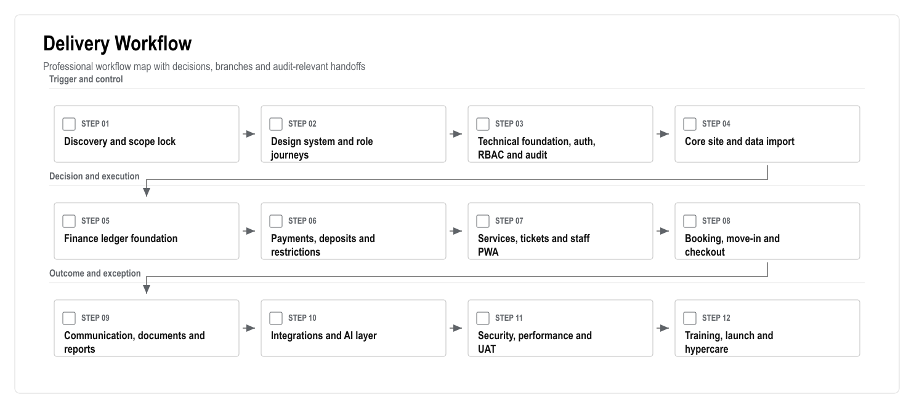
Figure: Delivery Workflow. Generated from the workflow source in this document.
| Phase | Business Outcome | Key Deliverables | Acceptance Gate |
| 1. Discovery and lock | Shared decision baseline | Final questions, data inventory, legal assumptions, integration inventory | Scope and assumptions signed |
| 2. UX and navigation | Role journeys are clear | Design system, route map, mobile PWA patterns, clickable workflows | Manager/resident/staff/accountant journeys approved |
| 3. Platform foundation | Secure access foundation | Auth, RBAC, RLS, audit log, protected route shell | Unauthorized access blocked and logged |
| 4. Site data | 769-flat model is usable | Site/block/floor/flat schema, import preview, flat matrix | 769 flats load and filter correctly |
| 5. People and roles | Owners, tenants and staff are mapped | Profiles, relationships, staff groups, identity status | Users link to flats with correct permissions |
| 6. Ledger | Finance has a reliable base | Accounts, journal entries, balances, reversals, statements | Balances reconcile to ledger lines |
| 7. Payments and restrictions | Debt affects operations safely | Payment intents, deposits, reconciliation, restriction engine | Restrictions enforced by backend rules |
| 8. Services and tickets | Requests become managed work | Catalogue, service order, ticket creation, SLA, assignment | Accepted service always creates trackable task |
| 9. Staff execution | Field work is visible | Staff PWA, media upload, completion report, tour control | Staff completes task from mobile with proof |
| 10. Booking and checkout | Move-in/out is controlled | Availability, booking, deposit, inspection, settlement, access actions | Mandatory booking/check-in/checkout scenario passes |
| 11. Communication/docs | Official communication is centralized | Chat, announcements, notifications, document vault | Messages and documents respect permissions |
| 12. PWA hardening | Mobile usage is production-ready | Manifest, mobile navigation, performance optimization, push plan | Mobile E2E workflows pass |
| 13. Integrations | External systems are connected safely | Payment/bank/SMS/access adapters, retry queue, health dashboard | No silent integration failure path |
| 14. AI and analytics | Management workload is reduced | AI briefing, recommendations, source links, evaluation set | AI cannot execute restricted actions |
| 15. Launch | Users can adopt safely | UAT, training, runbook, monitoring, hypercare | Go-live checklist accepted |
| Workstream | Owner | Main Responsibility |
| Product and scope | Product lead | Scope lock, acceptance criteria, roadmap decisions |
| UX and content | Design lead | Role journeys, Turkish-first UX, resident/staff simplicity |
| Engineering | Engineering lead | Architecture, implementation, code quality, technical gates |
| Data and migration | Data lead | Source inventory, import validation, reconciliation |
| Finance domain | Finance analyst / accountant | Ledger rules, deposits, statements, reconciliation |
| Security and compliance | Security/compliance lead | RBAC/RLS, KVKK, ASVS, audit, retention |
| QA and UAT | QA lead | Test strategy, UAT scripts, release evidence |
| Client operations | Client owner | Business rules, staff processes, training attendance |
| Decision Area | Required Decision | Recommended Default |
| Mobile launch scope | Native app or PWA-first | PWA-first, native wrapper later only if approved |
| Payment launch scope | Online provider or manual/bank first | Provider adapter if vendor confirmed; manual/bank fallback |
| Access restriction | Legal and operational boundaries | Human-approved access action queue |
| AI autonomy | What AI can execute | Recommendation only for sensitive actions |
| Hosting and data residency | Supabase/Vercel region choice | Confirm with client/legal before production |
| Data migration | Historical depth | Opening balances plus active users/flats first; history by priority |
| Risk | Impact | Mitigation |
| Data quality is poor | Setup delay and trust issues | Import preview, error report, reconciliation sign-off |
| Finance rules are unclear | Wrong balances or disputes | Accountant workshops and ledger acceptance tests |
| Access blocking creates legal risk | Operational and legal escalation | Legal review, human approval and manual fallback |
| Integration vendor is not ready | Delay to payments/access/meter features | Adapter pattern and manual/import fallback |
| Native app expectation returns | Scope and budget expansion | Written PWA-first decision and optional later phase |
| AI overreach | Unsafe recommendations | Guardrails, source links, evaluation and approval queue |
The final launch handover should include:
Version: 0.2
Date: 25 June 2026
Prepared for: QA, UAT, release management and launch readiness
Prepared by: 1Cati / Product and Engineering
Primary goal: Launch safely with tested workflows, trained users and clear support ownership
| Item | Detail |
| Document type | QA, UAT And Launch Plan |
| Primary audience | QA, product, engineering, delivery leadership and client operations |
| Status | Consulting-ready v0.2 |
| Design refresh | 25 June 2026 |
| Confidentiality | STRICTLY CONFIDENTIAL |
The platform handles finance, deposits, resident data, service requests, documents, access actions, AI recommendations and audit history. QA must therefore focus on business correctness and operational trust, not only UI behavior.
The launch should not proceed until the mandatory client scenarios pass: role login, flat lookup, ledger balance, payment/restriction behavior, service ticket, staff completion, booking, move-in, checkout, document permission, reporting and AI guardrail behavior.
| Layer | Purpose | Example Coverage |
| Unit tests | Prove domain rules | Ledger posting, balance calculation, restrictions, deposit settlement, permissions, AI guardrails |
| Integration tests | Prove services work together | Payment webhook idempotency, access action queue, notification delivery, storage permissions, RLS |
| E2E tests | Prove user workflows | Resident service request, debt block, staff completion, manager dashboard, booking and checkout |
| UAT scripts | Prove business acceptance | Client validates scenarios using realistic data |
| Security checks | Prove safe controls | RBAC/RLS, file access, audit logs, ASVS checklist, secrets |
| Performance checks | Prove usability at expected scale | 769-flat dashboard, search, reports, mobile staff/resident flows |
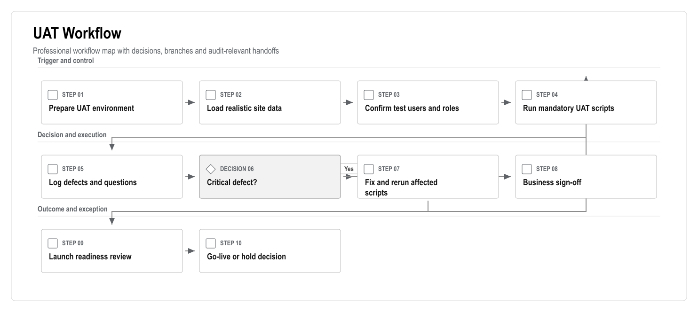
Figure: UAT Workflow. Generated from the workflow source in this document.
| Scenario | Roles | Acceptance Standard |
| Role login and navigation | Admin, manager, accountant, owner, tenant, staff | Each role sees only permitted modules |
| 769-flat lookup | Manager | Flats filter by block, floor, status, owner/tenant and debt |
| Owner balance and statement | Owner, accountant | Balance matches ledger and statement export |
| Tenant service request | Tenant, manager, staff | Request creates service order, ticket and status trail |
| Debt blocks service | Tenant, manager | User sees clear reason and payment path |
| Payment clears restriction | Tenant, accountant | Payment posts once and restriction status updates |
| Staff task completion | Staff, manager | Staff completes task with notes and media proof |
| Booking creation | Manager, accountant | Availability prevents overlap and links deposit |
| Move-in | Manager, staff, tenant | Preparation tasks, access request and welcome notification are created |
| Checkout | Manager, accountant | Inspection, debt check, settlement and access action are complete |
| Document access | Owner, tenant, staff | Users cannot view unauthorized documents |
| AI recommendation | Manager, accountant | AI shows sources and cannot execute restricted action |
| Reporting | Manager, accountant | Dashboard and exports match source records |
| Severity | Definition | Launch Impact |
| Critical | Finance corruption, role data leak, broken login, lost payment/access event | Blocks launch |
| High | Mandatory workflow blocked or incorrect audit/restriction behavior | Blocks launch unless formal waiver |
| Medium | Workaround exists but workflow is inefficient or confusing | Fix before launch if in core flow |
| Low | Cosmetic or low-impact content issue | Can move to launch backlog |
| Gate | Required Evidence | Owner |
| Feature complete | Scope checklist and demo | Product lead |
| Test complete | Unit/integration/E2E/UAT evidence | QA lead |
| Security ready | RBAC/RLS, ASVS-aligned checklist, secret check | Security lead |
| Data ready | Migration report and reconciliation sign-off | Data lead |
| Operations ready | Support runbook, monitoring, backup/restore evidence | Delivery lead |
| Training ready | Role-based training delivered or scheduled | Client operations |
| Launch decision | Open risks accepted and go-live approved | Steering group |
Version: 0.2
Date: 25 June 2026
Prepared for: Security, privacy, compliance and production readiness
Prepared by: 1Cati / Product and Engineering
Reference baseline: KVKK-aware processing and OWASP ASVS-aligned controls
| Item | Detail |
| Document type | Security And Compliance Plan |
| Primary audience | Security, compliance, engineering, product and client leadership |
| Status | Consulting-ready v0.2 |
| Design refresh | 25 June 2026 |
| Confidentiality | STRICTLY CONFIDENTIAL |
The platform will process personal data, owner/tenant relationships, financial records, documents, media uploads, service communications, access actions and AI events. Security and compliance must be designed into the product from the first production release.
This plan is not a legal opinion. It is a delivery checklist for engineering, product and operations. Debt restriction, access blocking, identity verification, camera data, document retention and payment compliance must still be reviewed by legal/accounting specialists before production launch.
| Source | How It Applies |
| KVKK Personal Data Protection Law: https://www.kvkk.gov.tr/Icerik/6649/Personal-Data-Protection-Law | Personal data must be processed lawfully, fairly, purposefully and proportionately |
| OWASP ASVS: https://owasp.org/www-project-application-security-verification-standard/ | Provides a structured baseline for testing web application security controls; current official page references ASVS 5.0.0 |
| web.dev PWA guidance: https://web.dev/learn/pwa/ | PWA should be treated as a modern installable web app with responsive design, service worker and secure delivery practices |
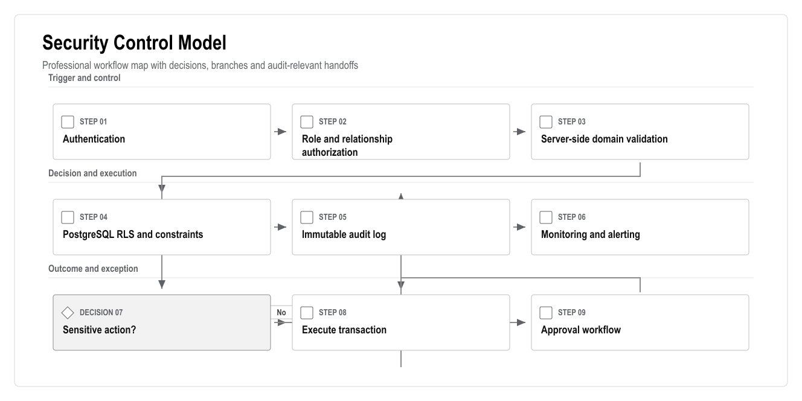
Figure: Security Control Model. Generated from the workflow source in this document.
| Data Class | Examples | Required Controls |
| Public/marketing | Public landing page content | Normal web publishing controls |
| Operational | Tickets, bookings, service categories, staff assignments | RBAC, audit for status changes, role-specific visibility |
| Personal | Names, contact data, owner/tenant relationships | Purpose limitation, role access, export caution |
| Financial | Ledger, balances, payments, deposits, refunds | Immutable postings, approval, idempotency, audit, restricted exports |
| Sensitive documents | Identity files, contracts, statements, legal notices | Storage permissions, download audit, retention review |
| Media | Task photos/videos, possible access/camera references | Role limits, retention policy, avoid unnecessary storage |
| Access control | Card/barrier IDs, activation/deactivation events | High privilege, approval, manual fallback, audit |
| AI events | Prompts, context, outputs, accepted/declined suggestions | Source links, role filtering, prompt/output logs, retention policy |
| Area | Required Control | Acceptance Evidence |
| Authentication | Supabase Auth, secure session refresh, password reset | Login/logout/session tests |
| Authorization | App-level RBAC plus database RLS | Role-based E2E and RLS tests |
| Finance | Immutable ledger, reversals, idempotency keys | Unit and integration tests |
| Files | Private buckets, signed URLs where needed, permission checks | Unauthorized file access test |
| Audit | Actor, timestamp, entity, action and sensitive before/after context | Audit log inspection |
| Integrations | Signature verification, retry queue, health dashboard | Webhook and failure-mode tests |
| AI | Source-linked, role-filtered, no direct sensitive mutations | AI safety/evaluation tests |
| Secrets | No secrets in client code or repository | Secret scan and env review |
| Logging | Structured logs without unnecessary personal data | Log review |
| Backup | Backup and restore drill | Restore evidence |
1. Which data residency requirements apply?
2. Which user consent and privacy notices are required?
3. What retention periods apply to financial records, identity documents, media and chat?
4. What is the legal basis for access restriction due to debt?
5. Are camera references or video storage required?
6. Which payment provider compliance rules apply?
7. Who approves refunds, access changes and sensitive exports?
8. Which reports are legally required for site management?
Version: 0.2
Date: 25 June 2026
Prepared for: Data migration, import validation and launch readiness
Prepared by: 1Cati / Product and Engineering
Primary migration scope: 769 flats, owners, tenants, staff, opening balances, documents and operational history where available
| Item | Detail |
| Document type | Data Migration Plan |
| Primary audience | Data migration, product, engineering, finance and client operations |
| Status | Consulting-ready v0.2 |
| Design refresh | 25 June 2026 |
| Confidentiality | STRICTLY CONFIDENTIAL |
Data migration will decide whether the platform feels trustworthy on day one. The first production migration should focus on correct active records: flats, owner/tenant relationships, user contacts, staff, account opening balances, current debts, deposits, active bookings, open service requests and essential documents.
Historical data should be migrated only where it has business value and acceptable quality. Poor history should not be imported blindly into the production ledger or audit trail.
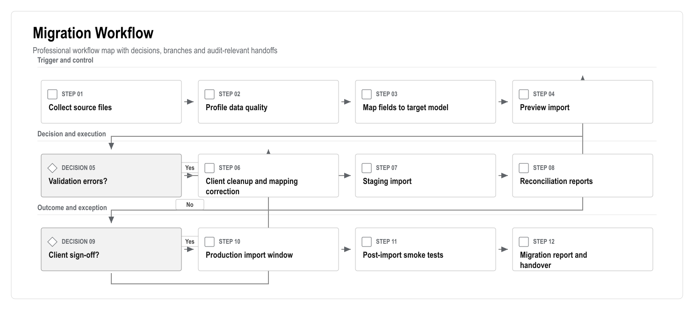
Figure: Migration Workflow. Generated from the workflow source in this document.
| Source | Expected Content | Migration Priority |
| Flat list | Site, block, floor, number, type, status | Critical |
| Owner list | Owner identity, contact, linked flats | Critical |
| Tenant list | Tenant identity, contact, occupancy dates, permissions | Critical |
| Staff list | Staff role, team, contact, employment status | Critical |
| Accounting export | Opening balances, debts, payments, deposits | Critical |
| Service history | Open requests, recent completed work, categories | High if available |
| Booking history | Active/future bookings, deposits, checkout status | High if available |
| Documents | Contracts, statements, identity files, rules, notices | High, with legal review |
| Communication history | Emails/SMS/chat | Optional unless required |
| Access list | Cards, access IDs, active/inactive status | Integration-dependent |
| Data Area | Validation Rule |
| Flats | Block/floor/flat combination must be unique |
| Users | Duplicate email/phone/identity candidates must be flagged |
| Relationships | Owner/tenant must link to an existing flat |
| Occupancy | Dates must not overlap without approved reason |
| Finance | Opening balance must map to an account and source file row |
| Deposits | Deposit must link to booking/flat/user where possible |
| Documents | Document owner, type and visibility must be defined |
| Access | External card/access IDs must not be stored as user IDs |
The migration cannot be accepted by file count alone. It needs reconciliation reports:
| Step | Action | Owner |
| 1 | Freeze source spreadsheets/exports | Client operations |
| 2 | Run final validation import in staging | Data lead |
| 3 | Review reconciliation report | Client and finance lead |
| 4 | Approve production import window | Steering group |
| 5 | Backup production database before import | Engineering lead |
| 6 | Run production import | Data/engineering lead |
| 7 | Run smoke tests and reconciliation | QA/data lead |
| 8 | Client signs migration acceptance | Client owner |
| Risk | Mitigation |
| Duplicate users | Candidate matching, manual merge queue, no silent overwrite |
| Wrong opening balances | Finance reconciliation and accountant sign-off |
| Missing flat relationships | Import preview errors and client correction file |
| Bad encoding/language | UTF-8 normalization and sample import review |
| Sensitive document overexposure | Default private visibility and permission mapping |
| Historical data inconsistency | Import active records first; migrate history only by approved scope |
Version: 0.2
Date: 25 June 2026
Prepared for: Scope control, QA planning and stakeholder sign-off
Prepared by: 1Cati / Product and Engineering
Purpose: Connect business needs to product requirements, technical controls and test evidence
| Item | Detail |
| Document type | Requirements Traceability Matrix |
| Primary audience | Product, QA, delivery leadership, engineering and client stakeholders |
| Status | Consulting-ready v0.2 |
| Design refresh | 25 June 2026 |
| Confidentiality | STRICTLY CONFIDENTIAL |
This matrix keeps the documentation package connected. It prevents a common delivery failure: a business requirement appears in the BRD, but the PRD, TRD, test plan or launch checklist does not carry it through.
Each major requirement must have a product owner, a technical owner, acceptance evidence and a release gate. Items without traceability should not be treated as launch-ready.
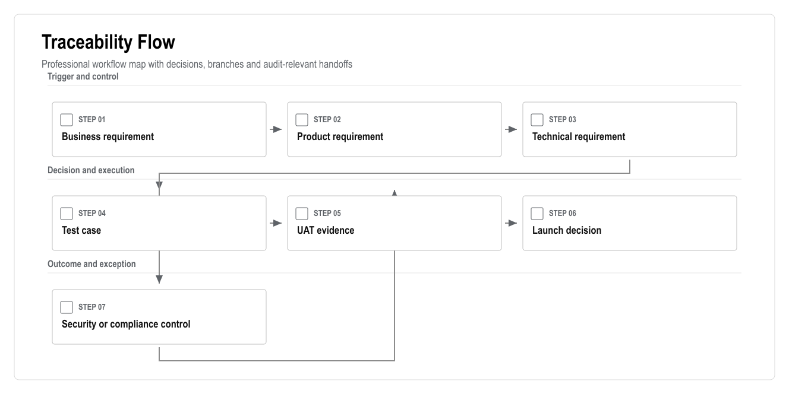
Figure: Traceability Flow. Generated from the workflow source in this document.
| ID | Business Requirement | Product Coverage | Technical Coverage | Acceptance Evidence |
| BR-001 | Represent all 769 flats | Core site data, flat matrix | Site/block/flat schema, import APIs | Import report and flat matrix UAT |
| BR-002 | Role-based access for all users | User and role management | Supabase Auth, RBAC, RLS | Role navigation and blocked access tests |
| BR-003 | Reliable finance balances | Finance ledger | Journal entries, balances, reversals | Ledger unit tests and accountant UAT |
| BR-004 | Payments and reconciliation | Payments/deposits module | Payment intents, webhooks, idempotency | Payment integration tests |
| BR-005 | Debt restrictions | Restriction rules | Restriction engine, backend checks | Debt-block E2E and legal approval |
| BR-006 | Service requests become work | Service catalogue and tickets | Service orders, tickets, SLA events | Service request E2E |
| BR-007 | Staff completion evidence | Workforce and media reports | Storage, media reports, ticket events | Mobile staff E2E |
| BR-008 | Booking, move-in and checkout | Booking workflows | Availability, deposits, settlement, access queue | Booking/check-in/checkout UAT |
| BR-009 | Communication and documents | Chat, announcements, vault | Message threads, notifications, document permissions | Permission and delivery tests |
| BR-010 | Reporting dashboard | Reporting module | Views/materialized views, exports | Dashboard source-data review |
| BR-011 | AI assistance with guardrails | AI layer | AI events, recommendations, approvals, retrieval | AI eval and restricted-action tests |
| BR-012 | Auditability | Audit module | Immutable audit logs | Audit inspection for critical actions |
| BR-013 | PWA mobile access | Resident/staff/manager PWA | Manifest, mobile shells, responsive routes | Mobile viewport tests |
| BR-014 | Integrations | Integration layer | Adapters, webhooks, retry queue | Integration health and failure tests |
| BR-015 | Security and privacy | Security requirements | RBAC/RLS, storage policies, ASVS checklist | Security launch checklist |
| Release | Minimum Traceability Evidence |
| Demo | Clickable role journeys, sample data, workflow demonstration |
| MVP | BR-001, BR-002, BR-003, BR-006, BR-007, BR-010, BR-012, BR-013 |
| V1 | MVP plus BR-004, BR-005, BR-008, BR-009, BR-011 |
| V2 | V1 plus BR-014 and advanced AI/analytics |
| Launch | All launch-scoped requirements have UAT evidence and accepted risks |
| Topic | Why It Is Open | Required Decision |
| Payment provider | Vendor not confirmed | Choose provider or approve manual/bank-first flow |
| Access vendor | API capability unknown | Confirm vendor, API/export/manual fallback |
| Legal access restriction boundary | Debt-based access action is sensitive | Legal review and client policy approval |
| Data retention | Retention periods not confirmed | Legal/accounting retention policy |
| Native app | Excluded from launch but may return | Written PWA-first approval |
| Meter/camera integrations | Vendor and legal basis unknown | Confirm roadmap vs launch requirement |
Version: 0.2
Date: 25 June 2026
Prepared for: Evidence tracking and documentation quality control
Prepared by: 1Cati / Product and Engineering
Purpose: Record the external reference baseline used by the requirements package
| Item | Detail |
| Document type | Source Register |
| Primary audience | Strategy, product, delivery leadership and QA reviewers |
| Status | Consulting-ready v0.2 |
| Design refresh | 25 June 2026 |
| Confidentiality | STRICTLY CONFIDENTIAL |
This register records public sources used for planning and positioning. It is not a legal opinion, market-share ranking or vendor certification. Product, security and legal decisions should be validated with the client, selected vendors and qualified legal/accounting advisors before launch.
| Source | URL | Used For |
| Apsiyon | https://www.apsiyon.com/ | Turkish site-management baseline: aidat, payments, resident/manager capabilities, access/meter/AI positioning |
| Senyonet | https://www.senyonet.com.tr/ | Turkish facility/site management benchmark: finance, accounting, security, communication, support/training |
| Yonetimcell | https://www.yonetimcell.com/ | Simplicity, aidat tracking, resident payment access, reports and staff job-tracking benchmark |
| Aidatim | https://www.aidatim.com/ | Hybrid software/service benchmark: support, setup, accounting/legal support, bank matching |
| Siteplus | https://www.siteplus.com.tr/ | Integrated facility operations benchmark: cleaning, security, technical maintenance |
| Buildium | https://www.buildium.com/features/ | Global property management capability baseline |
| Yardi Breeze | https://www.yardibreeze.com/features/ | Global accounting, maintenance and owner reporting baseline |
| DoorLoop | https://www.doorloop.com/features | Global property CRM, payments, maintenance, owner/tenant portal and AI baseline |
| Jira Service Management | https://www.atlassian.com/software/jira/service-management/features | Service desk workflow, SLA, assignment and automation baseline |
| web.dev PWA | https://web.dev/learn/pwa/ | PWA-first delivery rationale and mobile web expectations |
| OWASP ASVS | https://owasp.org/www-project-application-security-verification-standard/ | Web application security verification baseline; official page references ASVS 5.0.0 |
| KVKK | https://www.kvkk.gov.tr/Icerik/6649/Personal-Data-Protection-Law | Turkish personal data protection baseline |